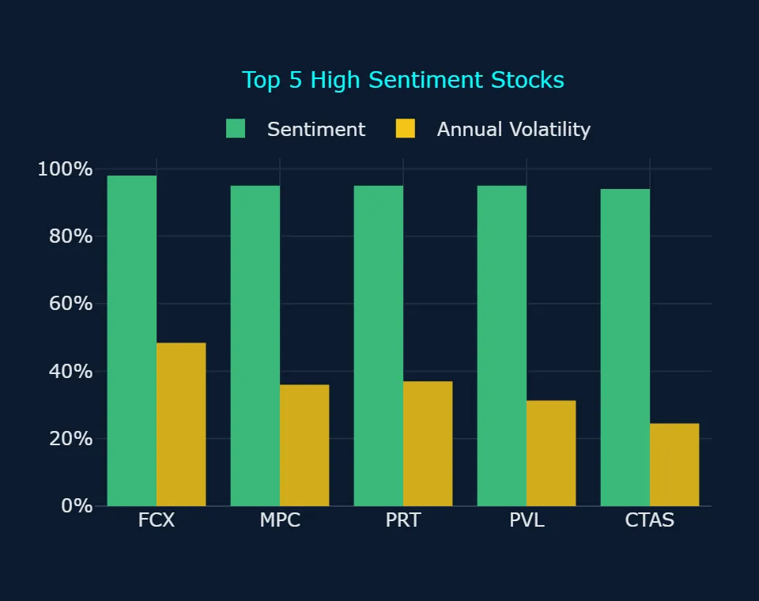
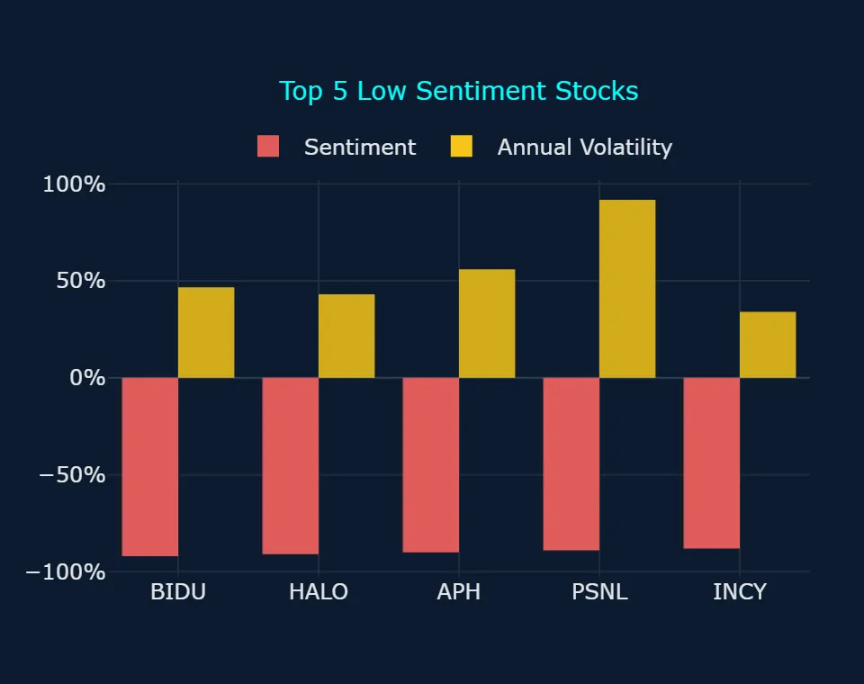
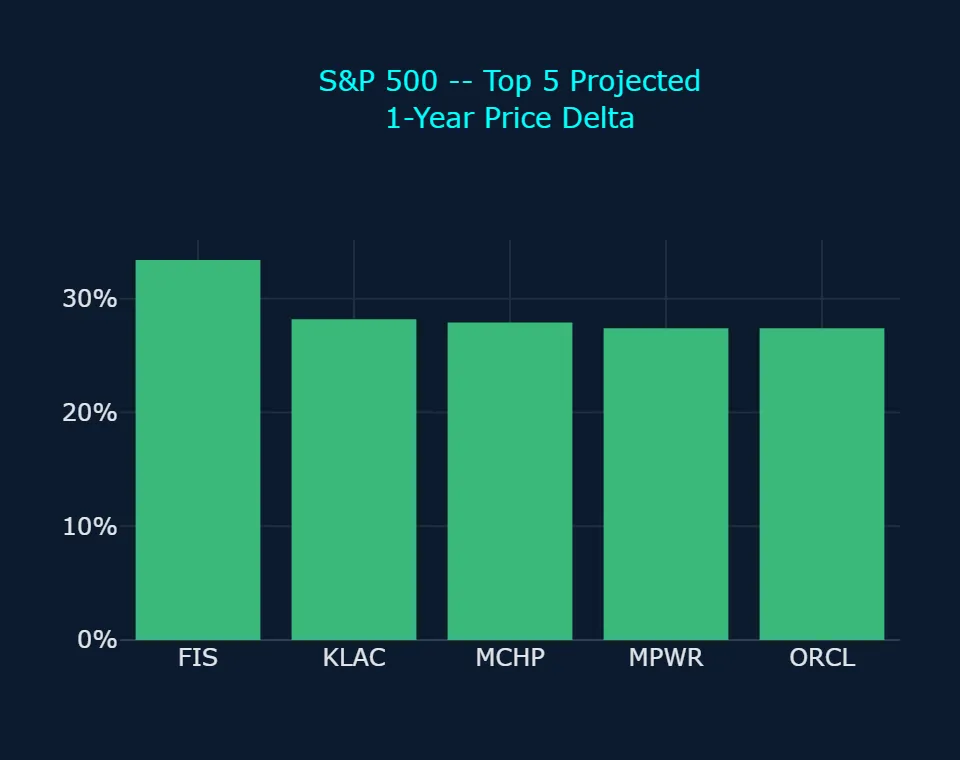
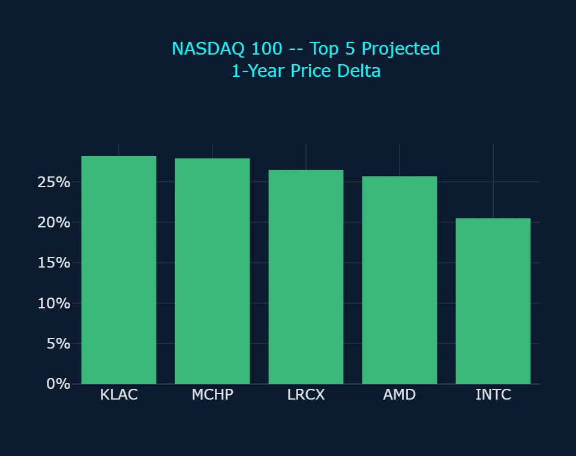
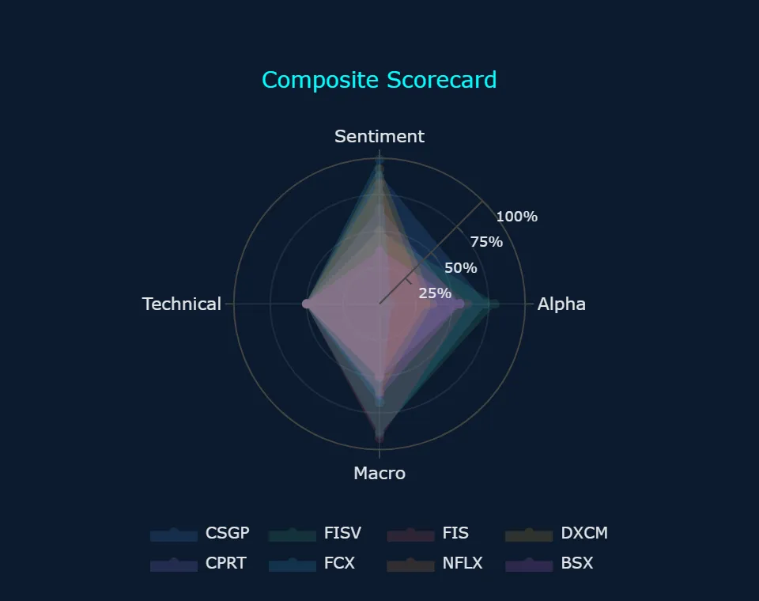
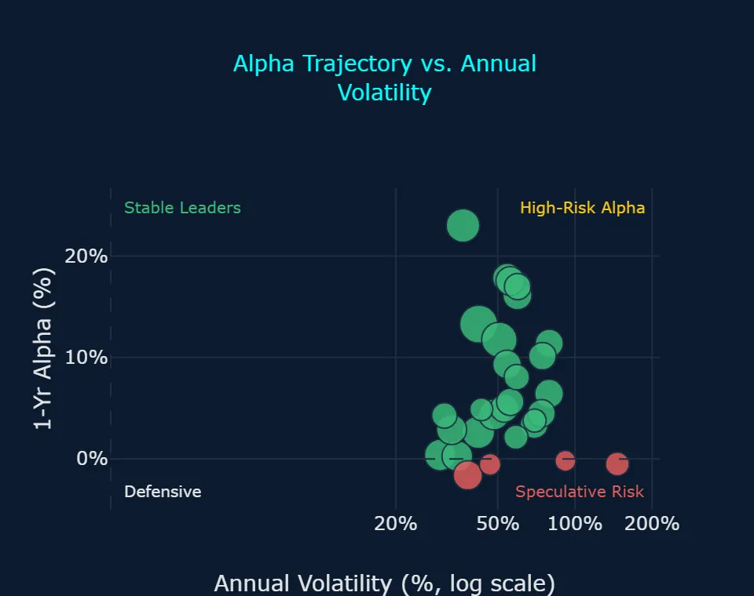
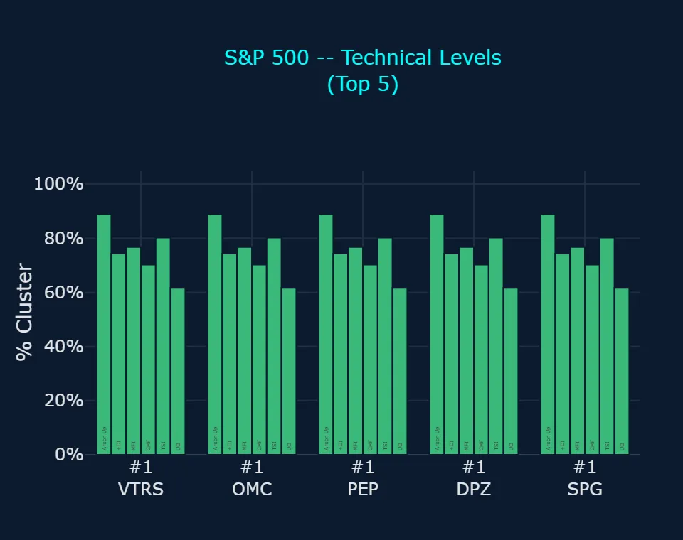
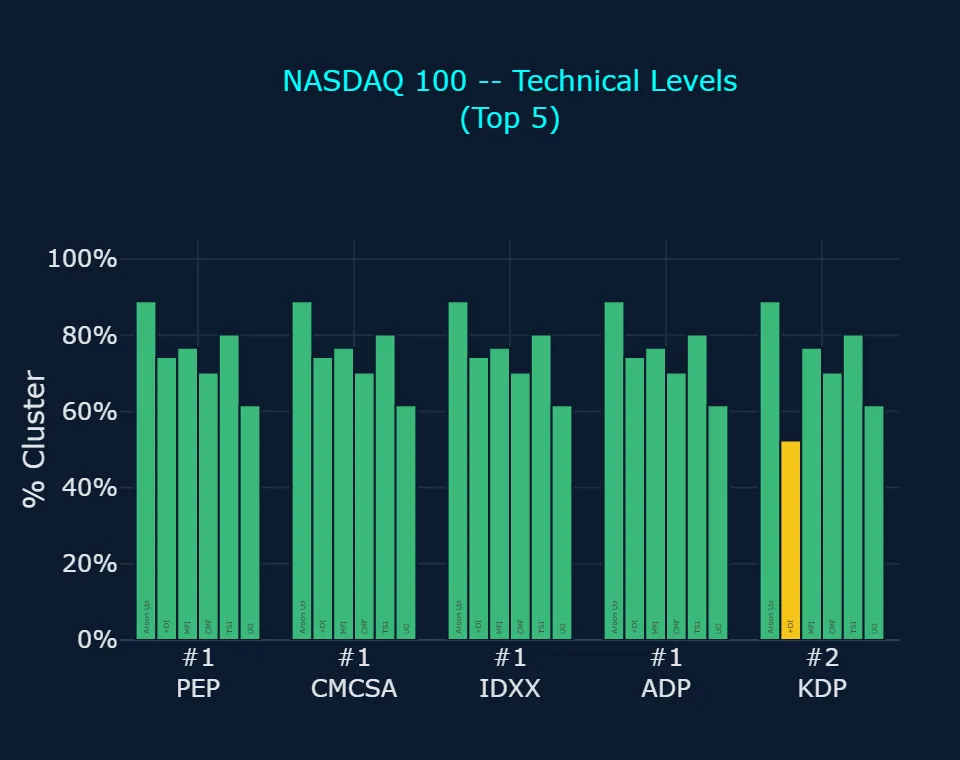
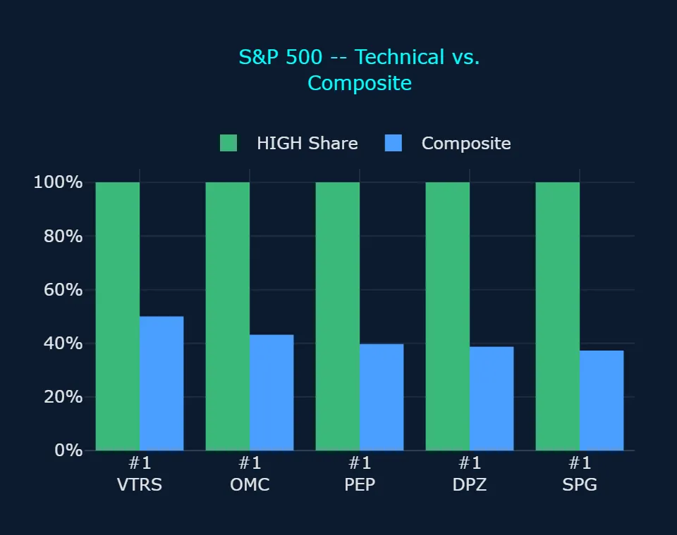
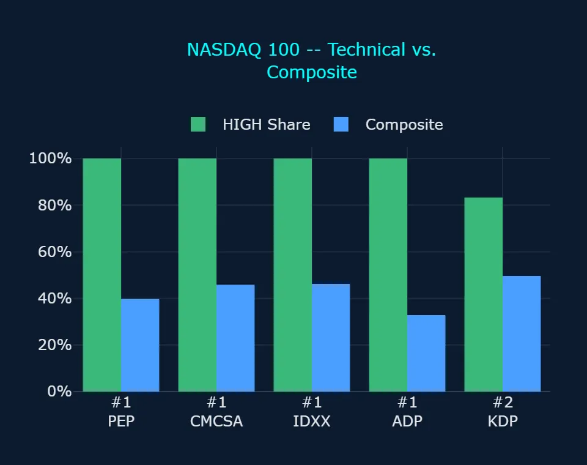

Zoonova AI: Pre-Market Quantitative Briefing – November 16, 2026
Session Quantitative Briefing: The Zoonova AI Intelligence Engine executes a hybrid architecture combining a proprietary Quad-Ensemble machine learning framework with Google Gemini Flash for real-time contextual synthesis and semantic macroeconomic grounding. The quantitative pipeline integrates four specialized estimators: Random Forest Regressor (RFR) for baseline structural stability, eXtreme Gradient Boosting (XGB) optimized for residual loss minimization, Categorical Boosting (CAT) for high-cardinality categorical signal processing, and Temporal Fusion Transformer (TFT) for multi-horizon price and volatility forecasting.
Zoonova AI: Pre-Market Momentum & Liquidity Report
1. QUANTITATIVE MODEL OVERVIEW & SIGNAL METRICS
This market intelligence report synthesizes predictive outputs from Zoonova's Quad-Ensemble (Random Forest Regressor [RFR], eXtreme Gradient Boosting [XGB], Categorical Boosting [CAT], and Temporal Fusion Transformer [TFT]) for multi-horizon price targets and alpha probabilities. Sentiment dynamics are tracked using VADER for sentiment scoring across institutional and public media channels. Structural regime shifts, market breadth, and directional outliers are evaluated using BIRCH clustering for anomaly detection and macro breadth modeling.
- SPDR S&P 500 ETF Trust (SPY) settled at $754.37 on 2026-11-13 with neutral sentiment of +5.0% and an annualized volatility of 16.89%, while Quad-Ensemble projections indicate a 1-year target of $832.67 for an implied gain of +10.4% through 2027-11-05 (Zoonova, 2026-11-13).
- Invesco QQQ Trust Series 1 (QQQ) concluded at $679.89 on 2026-11-13 under negative sentiment of -62.0% and an annualized volatility of 22.66%, with predictive models estimating a 1-year price of $742.13 representing a +9.2% advance (Zoonova, 2026-11-13).
- SPDR Dow Jones Industrial Average ETF (DIA) closed at $523.15 on 2026-11-13 reflecting sentiment of -62.0% and an annualized volatility of 15.19%, with models projecting a 1-year target of $557.32 for an implied gain of +6.5% (Zoonova, 2026-11-13).
- Vanguard Total Bond Market ETF (BND) closed at $70.56 on 2026-11-13 with neutral sentiment of 0.0% and an annualized volatility of 4.42%, projected to reach $76.48 for an implied gain of +8.4% over the 1-year horizon (Zoonova, 2026-11-13).
2. SENTIMENT INSIGHTS – TOP 5 HIGH & LOW
Top 5 High Sentiment Stocks
| Ticker | Company Name | Sentiment Score | Primary Catalyst / Driver |
|---|---|---|---|
| FCX | Freeport-McMoRan Inc | +98.0% | Operational recovery at the Grasberg minerals district and expectations for strong fourth-quarter copper sales continue to drive upbeat market sentiment (Kalkine Media, 2026-11-16). |
| MPC | Marathon Petroleum Corp | +95.0% | Robust refining crack spreads, disciplined share repurchases, and an agreement to divest mid-continent refinery assets for $4.2 billion bolstered investor enthusiasm (TradingKey, 2026-11-12). |
| PRT | PermRock Royalty Trust | +95.0% | Consistent monthly cash distributions from Permian Basin oil and gas production assets sustain favorable income-focused sentiment (Sure Dividend, 2026-11-07). |
| PVL | Permianville Royalty Trust | +95.0% | Reliable monthly net profits interest payouts across Texas and Louisiana properties underpin strong distribution-driven sentiment (Sure Dividend, 2026-11-07). |
| CTAS | Cintas Corporation | +94.0% | Record quarterly revenue surpassing $3 billion alongside operating margin expansion to 23.2% fueled elevated sentiment (Trefis, 2026-11-12). |
Top 5 Low Sentiment Stocks
| Ticker | Company Name | Sentiment Score | Primary Friction / Risk Factor |
|---|---|---|---|
| BIDU | Baidu Inc | -92.0% | Prolonged weakness in core advertising revenues and apprehension surrounding third-quarter earnings created persistent downward sentiment pressure (24/7 Wall St., 2026-11-16). |
| HALO | Halozyme Therapeutics Inc. | -91.0% | An analyst downgrade to Market Perform by Leerink Partners spurred valuation concerns regarding partner royalty concentration, dampening market sentiment (KoalaGains, 2026-11-06). |
| APH | Amphenol Corp. | -90.0% | Sector-wide tech hardware profit-taking and investor scrutiny over hyperscaler artificial intelligence capital expenditures weighed heavily on sentiment (TradingKey, 2026-11-13). |
| PSNL | Personalis Inc | -89.0% | Valuation upside remains tightly bounded by the pending Tempus AI merger agreement alongside investor reaction to wider quarterly net losses (MarketBeat, 2026-11-16). |
| INCY | Incyte Corp. | -88.0% | Analyst price target reductions and pipeline caution following the decision not to proceed with a late-stage clinical trial suppressed investor sentiment (MarketBeat, 2026-11-05). |
3. ALPHA PROBABILITY & PRICE DELTA LEADERBOARD – 1-YEAR HORIZON
S&P 500 – Top 5 High Alpha Probability (1yr)
| Ticker | Current Price ($) | 1-Yr Target Price ($) | Alpha Probability (%) | Implied Excess Alpha (%) | 10%+ Alpha? |
|---|---|---|---|---|---|
| FISV | $63.78 | $77.88 | 64.63% | 11.73% | Both Yes |
| CSGP | $30.96 | $38.29 | 59.26% | 13.28% | Both Yes |
| FIS | $29.54 | $39.40 | 49.16% | 23.02% | Split |
| BSX | $44.34 | $50.22 | 45.07% | 2.88% | Both No |
| CPRT | $31.83 | $35.25 | 44.77% | 0.36% | Both No |
S&P 500 – Top 5 Price Delta + % Change (1yr)
| Ticker | Current Price ($) | 1-Yr Target Price ($) | Absolute Delta ($) | Projected 1-Yr % Change (%) | Implied Excess Alpha (%) |
|---|---|---|---|---|---|
| FIS | $29.54 | $39.40 | $9.86 | 33.38% | 23.02% |
| KLAC | $152.32 | $195.27 | $42.95 | 28.20% | 17.82% |
| MCHP | $61.68 | $78.89 | $17.21 | 27.90% | 17.52% |
| MPWR | $1,390.54 | $1,771.75 | $381.21 | 27.41% | 17.03% |
| ORCL | $125.35 | $159.65 | $34.30 | 27.36% | 16.98% |
NASDAQ 100 – Top 5 High Alpha Probability (1yr)
| Ticker | Current Price ($) | 1-Yr Target Price ($) | Alpha Probability (%) | Implied Excess Alpha (%) | 10%+ Alpha? |
|---|---|---|---|---|---|
| CPRT | $31.83 | $35.25 | 44.77% | 0.36% | Both No |
| DXCM | $83.33 | $94.16 | 29.51% | 2.62% | Both No |
| NFLX | $62.15 | $68.76 | 25.93% | 0.25% | Both No |
| MRNA | $223.37 | $245.40 | 22.45% | -0.52% | Both No |
| MRVL | $156.76 | $183.10 | 19.99% | 6.42% | Both No |
NASDAQ 100 – Top 5 Price Delta + % Change (1yr)
| Ticker | Current Price ($) | 1-Yr Target Price ($) | Absolute Delta ($) | Projected 1-Yr % Change (%) | Implied Excess Alpha (%) |
|---|---|---|---|---|---|
| KLAC | $152.32 | $195.27 | $42.95 | 28.20% | 17.82% |
| MCHP | $61.68 | $78.89 | $17.21 | 27.90% | 17.52% |
| LRCX | $225.92 | $285.81 | $59.89 | 26.51% | 16.13% |
| AMD | $534.06 | $671.43 | $137.37 | 25.72% | 15.34% |
| INTC | $59.66 | $71.88 | $12.22 | 20.48% | 10.11% |
4. REAL-TIME CONTEXTUAL ENRICHMENT
As of 2026-11-16, macroeconomic crosscurrents reflect an active sector rotation away from premium-multiple technology hardware toward cash-generative industrial, financial technology, and energy names. The BIRCH clustering anomaly detection array registered low-severity Bearish Short-Term (3d) Trend Anomalies across 12 stocks, including AMD, Broadcom (AVGO), Cisco Systems (CSCO), Corning (GLW), Hewlett Packard Enterprise (HPE), Seagate Technology (STX), Teradyne (TER), and Western Digital (WDC) (Zoonova, 2026-11-13). This quantitative cluster confirms live market findings where investors are taking profits across semiconductor hardware suppliers amid heightened scrutiny over hyperscaler datacenter expenditure payback periods (TradingKey, 2026-11-13). In the Tech Stock Scorecard, NVIDIA (NVDA) retains the table's top Composite score of 52.5, whereas peers like AMD (Composite 32.5) and Broadcom (Composite 25.3) are penalized by Technical Signals of 25.0 following their short-term bearish trend anomalies (Zoonova, 2026-11-13).
Conversely, high-conviction alpha opportunities are concentrating in data-driven commercial services and financial infrastructure. In the Main Scorecard, CoStar Group (CSGP) achieves the table's leading Composite score of 74.1, accompanied by an Alpha Rating of 72.5, a Sentiment Rating of 88.0, and a Macro Alignment of 89.2. Both models expect CSGP to beat the benchmark by 10%+, supported by a 59.26% 1-year alpha probability and a projected 1-year price of $38.29 versus its $30.96 close on 2026-11-13 (Zoonova, 2026-11-13). Fiserv (FISV) holds the Main Scorecard's highest Alpha Rating of 79.1 and a Composite score of 66.3, where both models expect it to beat the benchmark by 10%+ with a 64.63% 1-year alpha probability and a projected 1-year price of $77.88 relative to its $63.78 close (Zoonova, 2026-11-13). Fidelity National Information Services (FIS) shows strong Macro Alignment of 92.1 and a 1-year price target of $39.40 against its $29.54 close, though the two models disagree on 10%+ outperformance, with an Alpha Probability of 49.16% and an Implied Excess Alpha of +23.02% (Zoonova, 2026-11-13).
Energy refiners and resource producers also demonstrate notable macro breadth resilience. In the anomaly array, 4 stocks registered low-severity Bullish Long-Term (1w) Trend Anomalies, including Marathon Petroleum (MPC) and Valero Energy (VLO) (Zoonova, 2026-11-13). This confirms high positive sentiment of +95.0% for MPC and +97.0% for VLO, as stable refining margins and heavy capital returns insulate downstream operators against broader equity volatility (TradingKey, 2026-11-12).
5. ANOMALY DETECTION SCANNER
Direction: Bearish
Low Severity (12 stocks)
- AMD – Advanced Micro Devices Inc.: Bearish Short-Term (3d) Trend Anomaly
- AVGO – Broadcom Inc: Bearish Short-Term (3d) Trend Anomaly
- CSCO – Cisco Systems, Inc.: Bearish Short-Term (3d) Trend Anomaly
- GLW – Corning, Inc.: Bearish Short-Term (3d) Trend Anomaly
- HPE – Hewlett Packard Enterprise Co: Bearish Short-Term (3d) Trend Anomaly
- MRNA – Moderna Inc: Bearish Long-Term (1w) Trend Anomaly
- RVMD – Revolution Medicines Inc: Bearish Long-Term (1w) Trend Anomaly
- STX – Seagate Technology Holdings Plc: Bearish Short-Term (3d) Trend Anomaly
- TER – Teradyne, Inc.: Bearish Short-Term (3d) Trend Anomaly
- VIR – Vir Biotechnology Inc: Bearish Short-Term (3d) Trend Anomaly
- WDC – Western Digital Corp.: Bearish Short-Term (3d) Trend Anomaly
- ZYME – Zymeworks BC Inc: Bearish Long-Term (1w) Trend Anomaly
Direction: Bullish
Low Severity (4 stocks)
- FOX – Fox Corporation: Bullish Short-Term (3d) Trend Anomaly
- FOXA – Fox Corporation: Bullish Short-Term (3d) Trend Anomaly
- MPC – Marathon Petroleum Corp: Bullish Long-Term (1w) Trend Anomaly
- VLO – Valero Energy Corp.: Bullish Long-Term (1w) Trend Anomaly
Direction: Mixed
Moderate Severity (1 stock)
- MU – Micron Technology Inc.: Bearish Short-Term (3d) Trend Anomaly, Bullish Long-Term (1w) Trend Anomaly
6. STRATEGIC INVESTMENT ASSESSMENT
- Overweight top-tier enterprise information and financial technology leaders: CoStar Group (CSGP) leads the Main Scorecard with a Composite score of 74.1, while Fiserv (FISV) commands the Main Scorecard's highest Alpha Rating of 79.1; both models expect each to beat the benchmark by 10%+, supported by 1-year alpha probabilities of 59.26% and 64.63% respectively (Zoonova, 2026-11-13).
- Maintain tactical defense against semiconductor and hardware cyclical exposure: The BIRCH anomaly model registered Bearish Short-Term (3d) Trend Anomalies across 12 stocks, including AMD, Broadcom (AVGO), and Western Digital (WDC), signaling that recent supply-chain consolidation remains unresolved in the immediate term (Zoonova, 2026-11-13).
- Allocate to cash-generative energy and refining equities: Marathon Petroleum (MPC) and Valero Energy (VLO) registered Bullish Long-Term (1w) Trend Anomalies paired with robust sentiment scores of +95.0% and +97.0%, offering defensive ballast as capital rotates from high-multiple tech into value assets (Zoonova, 2026-11-13).
- Balance growth exposure across broad market benchmarks: While 1-year model targets imply gains of +10.4% for SPDR S&P 500 ETF Trust (SPY) and +9.2% for Invesco QQQ Trust Series 1 (QQQ), QQQ's higher annualized volatility of 22.66% and negative sentiment of -62.0% favor balancing tech allocations with lower-volatility index components like SPDR Dow Jones Industrial Average ETF (DIA) at 15.19% annualized volatility (Zoonova, 2026-11-13).
7. STOCK SCORECARD
Main Scorecard
| Ticker | Composite (%) | Alpha Rating | 10%+ Alpha? | Projected 1-Yr Change (%) | Street Consensus (Upside) | Next Earnings | Sentiment Rating | Technical Signal | Macro Alignment | Anomaly Flag | Catalyst / Risk | Market Cap | EPS Revisions (30d) | Short Interest / DTC | Options Flow | Earnings Surprise (4Q) | Bias |
|---|---|---|---|---|---|---|---|---|---|---|---|---|---|---|---|---|---|
| CSGP | 74.1% | 72.5 | Both Yes | +23.7% | Hold (+15.8%) | 2027-02-23 | 88.0 | 50.0 | 89.2 | None | Commercial Real Estate Stabilization | $12.5B | Upward (+11.8%) | 3.1% / 1.7 DTC | Neutral / Mixed | 4/4 Beats (+11.8% avg) | Bullish |
| FISV | 66.3% | 79.1 | Both Yes | +22.1% | Hold (-2.2%) | 2027-02-09 | 50.0 | 50.0 | 87.7 | None | Cost Reduction Plan Progress | $33.9B | Upward (+3.2%) | 4.6% / 4.5 DTC | Bullish (Call Skew) | 3/4 Beats | Bullish |
| FIS | 61.5% | 60.2 | Split | +33.4% | Hold (+19.1%) | 2027-02-22 | 50.0 | 50.0 | 92.1 | None | Guidance Reset Margin Pressure | $15.2B | Downward (-6.5%) | 3.7% / 2.9 DTC | Bearish (Put Heavy) | 3/4 Beats | Neutral |
| DXCM | 58.5% | 36.1 | Both No | +13.0% | Strong Buy (+18.3%) | 2027-02-11 | 92.5 | 50.0 | 60.4 | None | Continuous Glucose Monitor Recovery | $31.1B | Upward (+4.4%) | 4.2% / 4.8 DTC | Bullish (Call Skew) | 4/4 Beats (+12.4% avg) | Neutral |
| CPRT | 55.3% | 54.8 | Both No | +10.7% | Buy (+19.4%) | 2026-11-19 (in 3d) | 65.0 | 50.0 | 50.6 | None | Acquisition Integration Fee Growth | $29.5B | Downward (-2.5%) | 2.1% / 3.4 DTC | Neutral / Mixed | 3/4 Beats | Neutral |
| FCX | 53.0% | 7.2 | Both No | +14.8% | Buy (+31.8%) | 2027-01-28 | 99.0 | 50.0 | 67.7 | None | Grasberg Capacity Recovery Progress | $88.5B | Upward (+10.0%) | 1.9% / 2.1 DTC | Bullish (Call Skew) | 4/4 Beats (+24.1% avg) | Neutral |
| NFLX | 52.6% | 31.7 | Both No | +10.6% | Buy (+36.4%) | 2027-01-26 | 82.5 | 50.0 | 49.9 | None | Subscriber Growth Deceleration Headwinds | $255.2B | Downward (-4.1%) | 2.4% / 2.2 DTC | Neutral / Mixed | 4/4 Beats (+6.0% avg) | Neutral |
| BSX | 50.7% | 55.2 | Both No | +13.3% | Buy (+11.9%) | 2027-02-04 | 36.5 | 50.0 | 62.5 | None | Cardiovascular Medical Device Expansion | $64.3B | Upward (+2.8%) | 1.8% / 2.3 DTC | Bullish (Call Skew) | 4/4 Beats (+5.5% avg) | Bearish |
| MPWR | 50.4% | 24.3 | Split | +27.4% | Strong Buy (+32.4%) | 2027-02-03 | 50.0 | 50.0 | 90.8 | None | Enterprise Data Center Acceleration | $67.8B | Upward (+8.6%) | 3.4% / 2.5 DTC | Bullish (Call Skew) | 4/4 Beats (+8.6% avg) | Neutral |
| KLAC | 49.3% | 16.1 | Split | +28.2% | Buy (+44.2%) | 2027-01-28 | 55.0 | 50.0 | 91.1 | None | Advanced Packaging Inspection Demand | $198.5B | Upward (+6.2%) | 1.9% / 2.4 DTC | Neutral / Mixed | 4/4 Beats (+6.8% avg) | Neutral |
| VLO | 48.8% | 5.0 | Both No | +8.7% | Buy (+7.0%) | 2027-01-27 | 97.0 | 75.0 | 21.6 | Bullish (1w) | Refining Margin Crack Tightness | $105.9B | Upward (+12.3%) | 2.8% / 3.2 DTC | Bullish (Call Skew) | 4/4 Beats (+15.8% avg) | Neutral |
| LRCX | 48.2% | 16.9 | Split | +26.5% | Strong Buy (+61.9%) | 2027-01-27 | 50.0 | 50.0 | 90.4 | None | Wafer Fab Equipment Spending | $282.2B | Upward (+4.5%) | 2.1% / 2.6 DTC | Bearish (Put Heavy) | 4/4 Beats (+4.2% avg) | Neutral |
| MCHP | 47.9% | 15.6 | Split | +27.9% | Buy (+40.2%) | 2027-02-04 | 50.0 | 50.0 | 90.9 | None | Embedded Microcontroller Inventory Digestion | $33.6B | Downward (-13.9%) | 4.7% / 3.6 DTC | Neutral / Mixed | 3/4 Beats | Neutral |
| MRVL | 47.1% | 24.5 | Both No | +16.8% | Strong Buy (+98.0%) | 2026-12-01 (in 15d) | 50.0 | 50.0 | 74.0 | None | Lumentum Acquisition Integration Headwinds | $137.5B | Downward (-6.2%) | 2.6% / 2.8 DTC | Bearish (Put Heavy) | 3/4 Beats | Neutral |
| ZYME | 45.4% | 7.7 | Both No | +15.4% | Strong Buy (+61.7%) | 2027-03-02 | 91.0 | 25.0 | 70.7 | Bearish (1w) | Zanidatamab Milestone Royalty Growth | $1.8B | Upward (+4.1%) | 5.1% / 4.2 DTC | Bullish (Call Skew) | 3/4 Beats | Neutral |
| APH | 43.3% | 50.3 | Both No | +16.0% | Strong Buy (+36.7%) | 2027-01-27 | 5.0 | 50.0 | 72.3 | None | Data Communications Component Demand | $193.2B | Upward (+9.4%) | 1.4% / 1.8 DTC | Bullish (Call Skew) | 4/4 Beats (+9.1% avg) | Bearish |
| GLW | 37.3% | 39.2 | Both No | +18.4% | Buy (+50.9%) | 2027-01-28 | 13.5 | 25.0 | 79.4 | Bearish (3d) | Optical Fiber Network Agreements | $98.3B | Downward (-4.6%) | 2.5% / 2.9 DTC | Bearish (Put Heavy) | 4/4 Beats (+3.3% avg) | Bearish |
| HALO | 30.2% | 8.5 | Both No | +15.2% | Buy (+7.9%) | 2027-02-18 | 4.5 | 50.0 | 70.0 | None | Enhanze Subcutaneous Licensing Litigation | $11.4B | Upward (+5.2%) | 4.5% / 3.8 DTC | Neutral / Mixed | 4/4 Beats (+12.0% avg) | Bearish |
| BIDU | 26.4% | 16.8 | Both No | +9.8% | Buy (+70.3%) | 2026-11-16 (today) | 4.0 | 50.0 | 39.5 | None | Online Advertising Slump Offset | $26.8B | Downward (-29.7%) | 3.2% / 2.7 DTC | Bearish (Put Heavy) | 2/4 Beats | Bearish |
| PSNL | 24.1% | 4.3 | Both No | +10.2% | Hold (-3.4%) | 2026-11-17 (in 1d) | 5.5 | 50.0 | 44.7 | None | Pending Cancer Diagnostics Merger | $1.7B | Downward (-21.5%) | 6.8% / 4.1 DTC | Neutral / Mixed | 2/4 Beats | Bearish |
10%+ Alpha? – whether Zoonova's two 1-year models (alpha probability and price target) expect the stock to beat the benchmark by 10%+. “Both No” is common: 10% is a high bar.
Tech Stock Scorecard
| Ticker | Composite (%) | Alpha Rating | 10%+ Alpha? | Projected 1-Yr Change (%) | Street Consensus (Upside) | Next Earnings | Sentiment Rating | Technical Signal | Macro Alignment | Anomaly Flag | Catalyst / Risk | Market Cap | EPS Revisions (30d) | Short Interest / DTC | Options Flow | Earnings Surprise (4Q) | Bias |
|---|---|---|---|---|---|---|---|---|---|---|---|---|---|---|---|---|---|
| NVDA | 52.5% | 11.9 | Both No | +13.6% | Buy (+67.7%) | 2026-11-17 (in 1d) | 94.5 | 50.0 | 63.8 | None | Leadership Transition Executive Scrutiny | $3.92T | Downward (-5.8%) | 1.2% / 1.5 DTC | Unusual Volume Detected | 4/4 Beats (+8.2% avg) | Neutral |
| INTC | 43.5% | 5.8 | Split | +20.5% | Hold (+51.9%) | 2027-01-28 | 50.0 | 50.0 | 84.0 | None | Foundry Node Yield Execution | $317.1B | Downward (-11.2%) | 3.5% / 3.1 DTC | Bearish (Put Heavy) | 3/4 Beats | Neutral |
| AAPL | 38.0% | 3.8 | Both No | +6.5% | Buy (-2.6%) | 2027-01-28 | 94.5 | 50.0 | 3.6 | None | Services Ecosystem Margin Strength | $5.18T | Upward (+3.4%) | 1.1% / 1.4 DTC | Bullish (Call Skew) | 4/4 Beats (+4.8% avg) | Bearish |
| AMZN | 35.7% | 1.5 | Both No | +7.2% | Strong Buy (+22.4%) | 2027-02-04 | 84.5 | 50.0 | 8.3 | None | Cloud Infrastructure Capacity Ramps | $2.88T | Upward (+5.1%) | 0.8% / 1.3 DTC | Bullish (Call Skew) | 3/4 Beats | Bearish |
| TSLA | 35.4% | 5.0 | Both No | +13.1% | Hold (+6.2%) | 2027-01-27 | 36.5 | 50.0 | 61.5 | None | Autonomous Driving Fleet Progress | $1.54T | Downward (-3.2%) | 2.8% / 2.1 DTC | Bearish (Put Heavy) | 2/4 Beats | Bearish |
| META | 33.1% | 1.8 | Both No | +10.6% | Buy (+29.8%) | 2027-01-28 | 40.5 | 50.0 | 49.5 | None | Advertising Monetization Margin Compression | $1.64T | Downward (-41.4%) | 1.3% / 1.8 DTC | Bullish (Call Skew) | 3/4 Beats | Bearish |
| AMD | 32.5% | 3.3 | Split | +25.7% | Buy (+19.9%) | 2027-02-02 | 29.0 | 25.0 | 90.2 | Bearish (3d) | Data Center Processor Expansion | $875.9B | Upward (+7.2%) | 2.3% / 2.1 DTC | Bullish (Call Skew) | 4/4 Beats (+7.2% avg) | Bearish |
| GOOGL | 31.4% | 4.6 | Both No | +8.7% | Buy (+36.0%) | 2027-02-02 | 52.5 | 50.0 | 21.7 | None | Search Advertising Platform Shift | $3.58T | Downward (-29.7%) | 1.1% / 1.5 DTC | Neutral / Mixed | 3/4 Beats | Bearish |
| MSFT | 27.1% | 4.0 | Both No | +6.8% | Strong Buy (+16.4%) | 2027-01-26 | 50.0 | 50.0 | 4.5 | None | Cloud Copilot Infrastructure Expansion | $3.89T | Upward (+3.6%) | 0.9% / 1.6 DTC | Bullish (Call Skew) | 4/4 Beats (+3.6% avg) | Bearish |
| AVGO | 25.3% | 3.0 | Both No | +11.5% | Strong Buy (+51.6%) | 2026-12-09 (in 23d) | 29.0 | 25.0 | 54.5 | Bearish (3d) | Custom Accelerator Chip Demand | $1.66T | Upward (+3.3%) | 1.5% / 1.7 DTC | Neutral / Mixed | 4/4 Beats (+3.3% avg) | Bearish |
| SPCX | N/H | N/H | N/A | N/A | Buy | 2027-02-17 | N/H | N/H | N/H | None | Starship Flight Test Milestones | $1.89T | Upward (+76.8%) | 1.0% / 1.2 DTC | Bullish (Call Skew) | 2/4 Beats | N/A |
N/H: no ML scores yet (insufficient trading history for the models).
Search-grounded columns (Street Consensus (Upside), Next Earnings, Catalyst / Risk, Market Cap, EPS Revisions (30d), Short Interest / DTC, Options Flow, Earnings Surprise (4Q)): MarketBeat (sources dated 2026-11-10 to 2026-11-14).






Educational purposes only. Not investment advice.
Zoonova AI: Pre-Market Technical Analysis Report
Top-ranked leaders display unanimous technical strength across both indexes, but low composite scores create widespread divergences.
1. 6 CORE INDICATORS
Indicator levels (LOW / MEDIUM / HIGH) and % Cluster come from Zoonova's BIRCH model (Balanced Iterative Reducing and Clustering using Hierarchies), an unsupervised machine-learning clustering model used for pattern recognition. Each indicator is clustered across the stock universe; % Cluster is the centroid of the cluster a stock falls in.
| Indicator | Category | Role |
|---|---|---|
| ARUPAroon Up | Trend Direction | Recency of the highest high in the lookback window; collapses in bear markets, so HIGH means price keeps printing fresh swing highs. |
| +DIPositive Directional Indicator | Trend Direction | Upward directional movement relative to true range; unlike ADX it collapses in sell-offs, so HIGH confirms buyer-driven expansion. |
| MFIMoney Flow Index | Volume / Inflow | Volume-weighted RSI from 0 to 100; falls as money leaves on down days, so HIGH means inflow on up days outweighs outflow. |
| CMFChaikin Money Flow | Volume / Inflow | Close location within the bar weighted by volume; plunges negative in liquidation, so HIGH confirms sustained buying into the top of daily ranges. |
| TSITrue Strength Index | Momentum | Double-smoothed momentum from -100 to +100; deeply negative in downtrends, so HIGH shows consistent multi-period upward thrust. |
| UOUltimate Oscillator | Momentum | Buying pressure across 7-, 14- and 28-period windows from 0 to 100; sinks when closes sit near the lows, so HIGH means buyers are in control on every timeframe. |
2. TECHNICAL REGIME
| Index | Universe | All HIGH (6/6) | Avg HIGH | Aroon Up HIGH | +DI HIGH | MFI HIGH | CMF HIGH | TSI HIGH | UO HIGH |
|---|---|---|---|---|---|---|---|---|---|
| S&P 500 | 424 | 26 | 2.1/6 | 143 | 124 | 109 | 107 | 218 | 209 |
| NASDAQ 100 | 71 | 4 | 1.8/6 | 23 | 16 | 13 | 14 | 29 | 31 |
Across the S&P 500, the average HIGH count reached 2.1 across 424 constituents with 26 stocks with all indicators HIGH, led by momentum breadth in TSI (218) and UO (209). In contrast, the NASDAQ 100 showed a lower average HIGH count of 1.8 across 71 members with only 4 stocks with all indicators HIGH, reflecting more selective technical leadership.
3. TOP 5 BULLISH CONFLUENCE
Ranking: Rank = HIGH count (#1 = 6/6, #2 = 5/6, ...); within a rank, Sentiment (desc), then ticker. Sentiment only orders tickers within a rank; it is not a technical signal.
S&P 500 – Top 5 Bullish Confluence
| Rank | Ticker | Aroon Up | +DI | MFI | CMF | TSI | UO | HIGH | Sentiment |
|---|---|---|---|---|---|---|---|---|---|
| 1 | VTRS | HIGH 88.9% | HIGH 74.3% | HIGH 76.7% | HIGH 70.2% | HIGH 80.2% | HIGH 61.6% | 6/6 | +90.0% |
| 1 | OMC | HIGH 88.9% | HIGH 74.3% | HIGH 76.7% | HIGH 70.2% | HIGH 80.2% | HIGH 61.6% | 6/6 | +88.0% |
| 1 | PEP | HIGH 88.9% | HIGH 74.3% | HIGH 76.7% | HIGH 70.2% | HIGH 80.2% | HIGH 61.6% | 6/6 | +80.0% |
| 1 | DPZ | HIGH 88.9% | HIGH 74.3% | HIGH 76.7% | HIGH 70.2% | HIGH 80.2% | HIGH 61.6% | 6/6 | +77.0% |
| 1 | SPG | HIGH 88.9% | HIGH 74.3% | HIGH 76.7% | HIGH 70.2% | HIGH 80.2% | HIGH 61.6% | 6/6 | +72.0% |
S&P 500 – Signal Groups
| Rank | Ticker | Trend Direction | Volume / Inflow | Momentum |
|---|---|---|---|---|
| 1 | VTRS | 2 of 2 HIGH | 2 of 2 HIGH | 2 of 2 HIGH |
| 1 | OMC | 2 of 2 HIGH | 2 of 2 HIGH | 2 of 2 HIGH |
| 1 | PEP | 2 of 2 HIGH | 2 of 2 HIGH | 2 of 2 HIGH |
| 1 | DPZ | 2 of 2 HIGH | 2 of 2 HIGH | 2 of 2 HIGH |
| 1 | SPG | 2 of 2 HIGH | 2 of 2 HIGH | 2 of 2 HIGH |
NASDAQ 100 – Top 5 Bullish Confluence
| Rank | Ticker | Aroon Up | +DI | MFI | CMF | TSI | UO | HIGH | Sentiment |
|---|---|---|---|---|---|---|---|---|---|
| 1 | PEP | HIGH 88.9% | HIGH 74.3% | HIGH 76.7% | HIGH 70.2% | HIGH 80.2% | HIGH 61.6% | 6/6 | +80.0% |
| 1 | CMCSA | HIGH 88.9% | HIGH 74.3% | HIGH 76.7% | HIGH 70.2% | HIGH 80.2% | HIGH 61.6% | 6/6 | +49.0% |
| 1 | IDXX | HIGH 88.9% | HIGH 74.3% | HIGH 76.7% | HIGH 70.2% | HIGH 80.2% | HIGH 61.6% | 6/6 | +48.0% |
| 1 | ADP | HIGH 88.9% | HIGH 74.3% | HIGH 76.7% | HIGH 70.2% | HIGH 80.2% | HIGH 61.6% | 6/6 | +44.0% |
| 2 | KDP | HIGH 88.9% | MEDIUM 52.4% | HIGH 76.7% | HIGH 70.2% | HIGH 80.2% | HIGH 61.6% | 5/6 | +81.0% |
NASDAQ 100 – Signal Groups
| Rank | Ticker | Trend Direction | Volume / Inflow | Momentum |
|---|---|---|---|---|
| 1 | PEP | 2 of 2 HIGH | 2 of 2 HIGH | 2 of 2 HIGH |
| 1 | CMCSA | 2 of 2 HIGH | 2 of 2 HIGH | 2 of 2 HIGH |
| 1 | IDXX | 2 of 2 HIGH | 2 of 2 HIGH | 2 of 2 HIGH |
| 1 | ADP | 2 of 2 HIGH | 2 of 2 HIGH | 2 of 2 HIGH |
| 2 | KDP | 1 of 2 HIGH | 2 of 2 HIGH | 2 of 2 HIGH |
4. TICKER READS
S&P 500
- #1 VTRS – 6/6 HIGH, with Aroon Up and +DI confirming upside trend expansion alongside full Volume / Inflow support from MFI and CMF. Momentum indicators TSI and UO also sit in the top cluster, signaling broad multi-period buyer control. With a Composite of 50.0 and sentiment at +90.0%, the overall setup carries a Mixed verdict. Watch: softening in CMF or MFI volume clusters to test trend durability.
- #1 OMC – 6/6 HIGH, demonstrating clean alignment across Trend Direction, Volume / Inflow, and Momentum indicator clusters. Persistent buying into session highs is validated by HIGH CMF and MFI, while Aroon Up and +DI reflect consistent swing highs. The setup is Divergent because the technical profile conflicts with a Composite of 43.2 and weak Macro Alignment of 34.7. Watch: any slip in Aroon Up or +DI from top cluster levels.
- #1 PEP – 6/6 HIGH, supported by balanced breadth where Trend Direction, Volume / Inflow, and Momentum each register 2 of 2 indicators at HIGH. Strong accumulation through MFI and CMF pairs with upward thrust in TSI and UO to keep buyers in control across timeframes. A Divergent verdict emerges from the gap between technical strength and a Composite of 39.7 weighed down by Macro Alignment at 21.0. Watch: an inflow reversal in CMF to signal fading institutional support.
- #1 DPZ – 6/6 HIGH, featuring unanimous strength in Trend Direction, Volume / Inflow, and Momentum. Indicators such as Aroon Up, +DI, and TSI place the stock in upper cluster centroids, confirming vigorous buying pressure and price expansion. The configuration receives a Divergent verdict due to a low Composite of 38.7, severely burdened by Macro Alignment of 5.0. Watch: weakening Momentum in UO or TSI to threaten cluster positioning.
- #1 SPG – 6/6 HIGH, displaying universal strength across all three signal groups as buyers dominate daily ranges. Aroon Up and +DI demonstrate top-tier directional movement, matched by positive volume flow via MFI and CMF. However, a Composite of 37.3 generates a Divergent verdict, held back by an Alpha Rating of 0.8 and Macro Alignment of 15.4. Watch: a drop in MFI or CMF volume clusters below top percentiles.
NASDAQ 100
- #1 PEP – 6/6 HIGH, supported by balanced breadth where Trend Direction, Volume / Inflow, and Momentum each register 2 of 2 indicators at HIGH. Strong accumulation through MFI and CMF pairs with upward thrust in TSI and UO to keep buyers in control across timeframes. A Divergent verdict emerges from the gap between technical strength and a Composite of 39.7 weighed down by Macro Alignment at 21.0. Watch: an inflow reversal in CMF to signal fading institutional support.
- #1 CMCSA – 6/6 HIGH, showing unanimous placement in the top cluster across Trend Direction, Volume / Inflow, and Momentum. Sustained accumulation is underscored by HIGH CMF and MFI, while multi-period thrust in TSI confirms robust upward participation. The stock maintains a Mixed verdict as its Composite of 45.8 sits just below the confirmed threshold despite balanced underlying scores. Watch: deterioration in +DI or Aroon Up to test directional expansion.
- #1 IDXX – 6/6 HIGH, capturing full participation with Trend Direction, Volume / Inflow, and Momentum all at 2 of 2 HIGH. Top cluster readings in Aroon Up, +DI, and UO highlight steady buyer control through range closes and swing highs. The resulting profile yields a Mixed verdict alongside a Composite of 46.2, supported by Macro Alignment of 63.5. Watch: volume outflow in MFI or CMF to disrupt the technical cluster.
- #1 ADP – 6/6 HIGH, reflecting cohesive upside action across Trend Direction, Volume / Inflow, and Momentum. Strong directional expansion in Aroon Up and +DI aligns with solid volume sponsorship via CMF and MFI. The verdict is Divergent because the unblemished technical profile sharply contrasts with a Composite of 32.8, restrained by an Alpha Rating of 1.0. Watch: TSI momentum deceleration to signal a break in technical alignment.
- #2 KDP – 5/6 HIGH, showing full cluster strength in Volume / Inflow and Momentum but partial confirmation in Trend Direction with +DI at MEDIUM. Persistent accumulation via MFI and CMF combines with positive multi-timeframe thrust in TSI and UO to favor buyers. With a Composite of 49.6 and balanced Macro Alignment of 58.6, the setup receives a Mixed verdict. Watch: +DI to advance into the HIGH cluster to complete technical breadth.
5. TECHNICAL VS. COMPOSITE MODEL CHECK
Composite is the Zoonova Scorecard (0-100), normalized across the full universe: 30% Alpha (1-year probability of beating the benchmark by 10%+), 25% Sentiment, 25% Technical (bullish minus bearish anomaly flags; 50 = none) and 20% Macro (1-year alpha percentile).
Verdict: Confirmed = strong technicals (HIGH share 75% or more) with Composite 55 or more; Divergent = one strong and the other weak (strong technicals with Composite below 45, or weak technicals, HIGH share below 50%, with Composite 55 or more); Weak = both weak; otherwise Mixed.
S&P 500 – Technical vs. Composite
| Rank | Ticker | HIGH | Composite | Verdict |
|---|---|---|---|---|
| 1 | VTRS | 6/6 | 50.0% | Mixed |
| 1 | OMC | 6/6 | 43.2% | Divergent |
| 1 | PEP | 6/6 | 39.7% | Divergent |
| 1 | DPZ | 6/6 | 38.7% | Divergent |
| 1 | SPG | 6/6 | 37.3% | Divergent |
NASDAQ 100 – Technical vs. Composite
| Rank | Ticker | HIGH | Composite | Verdict |
|---|---|---|---|---|
| 1 | PEP | 6/6 | 39.7% | Divergent |
| 1 | CMCSA | 6/6 | 45.8% | Mixed |
| 1 | IDXX | 6/6 | 46.2% | Mixed |
| 1 | ADP | 6/6 | 32.8% | Divergent |
| 2 | KDP | 5/6 | 49.6% | Mixed |
- OMC: OMC pairs a 6/6 HIGH technical profile with a Composite of 43.2, curtailed by a subdued Macro Alignment of 34.7.
- PEP: PEP exhibits 6/6 HIGH technical indicators against a Divergent Composite of 39.7, dampened by weak Macro Alignment of 21.0.
- DPZ: DPZ displays unanimous 6/6 HIGH technical indicators but carries a Composite of 38.7 due to a minimal Macro Alignment of 5.0.
- SPG: SPG presents 6/6 HIGH indicators alongside a Divergent Composite of 37.3, constrained by an Alpha Rating of 0.8 and Macro Alignment of 15.4.
- ADP: ADP couples complete 6/6 HIGH technical readings with a Composite of 32.8, weighed down by an Alpha Rating of 1.0 and Macro Alignment of 10.1.
6. TECHNICAL CONTEXT
- VTRS – S&P Global Ratings revised Viatris's outlook to positive from stable on 2026-11-13, affirming its BB+ rating on improving revenue trends. (S&P Global Ratings, 2026-11-13)
- CMCSA – Comcast prepared to eliminate more than 1,000 positions in its cable and broadband divisions ahead of its planned NBCUniversal separation. (Quartz, 2026-11-10)
- FOX – Fox Corporation registered a bullish short-term (3d) trend anomaly, confirming localized strength in media peers alongside CMCSA. (Zoonova, 2026-11-13)
- MRNA – Moderna Inc registered a bearish long-term (1w) trend anomaly, highlighting sector divergence against resilient pharmaceutical technicals. (Zoonova, 2026-11-13)
7. TECHNICAL ASSESSMENT
Technical breadth among top-ranked constituents remains exceptionally concentrated in top indicator clusters, driven by synchronized momentum and steady volume accumulation across defensive and consumer sectors. However, the prevailing posture is undermined by widespread divergence, as five of the nine featured leaders carry Divergent verdicts due to low Macro Alignment. The primary risk centers on market-wide spillover from 12 stocks flagging bearish trend anomalies, which could trigger volume liquidation and break top-tier cluster positioning.




Educational purposes only. Not investment advice.